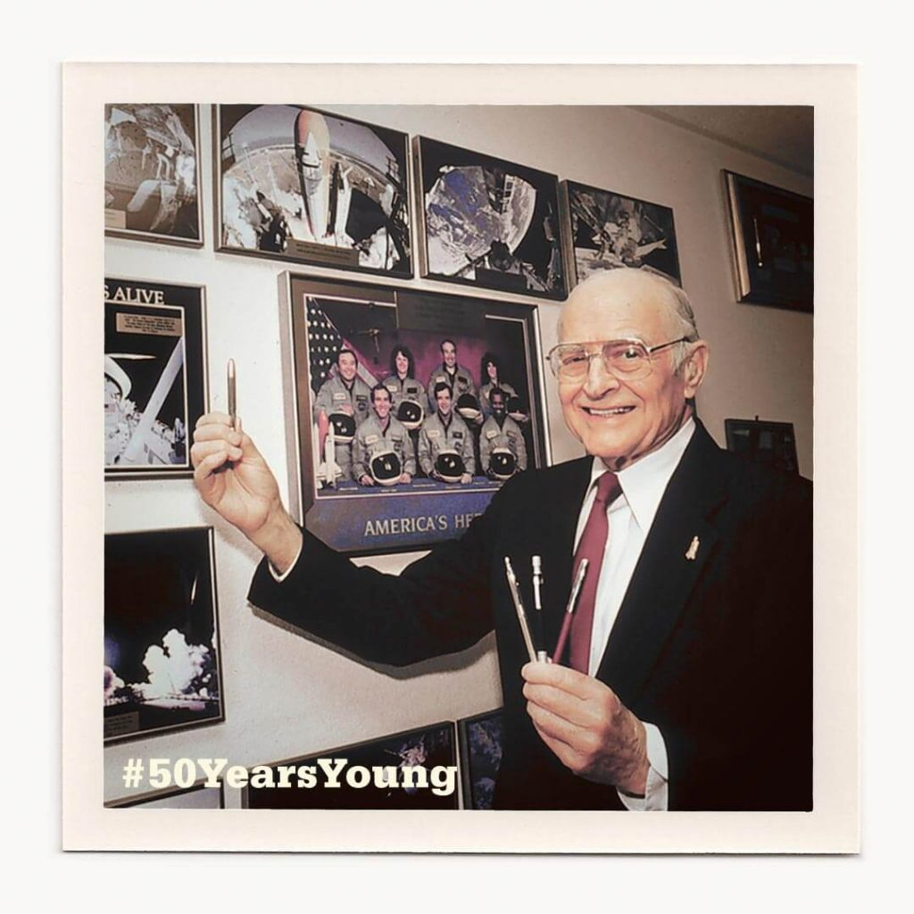
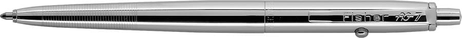

ဒီ အာကာသ ဘောပင်ကို အမေရိကန် နာဆာက အာကာသ ယာဉ်မှူးတွေ သုံးကြပါတယ်။ အာကာသ ထဲမှာက မြေဆွဲအား မရှိတော့ ပုံမှန် မြေပြင်ပေါ်မှာ သုံးနေတဲ့ ဘောပင်တွေ ဖောင်တိတွေကို သုံးလို့ မရပါဘူး။ မယုံရင် အိပ်ယာပေါ် ပက်လက် အိပ်ပြီး ဘောပင်ကို ဇောက်ထိုးထား ရေးကြည့်ပါ။ ခနလေး ရေးပြီးတာနဲ့ မင်ဆက် မလိုက်တော့တာ တွေ့လာပါလိမ့်မယ်။ ဒီလို ဘာလို့ ဖြစ်ရလဲ ဆိုတော့ ဘောပင်ထဲက မှင်က ကမ္ဘာမြေ ဆွဲအားနဲ့ အပြင်ကို ထွက်လာတာ မို့ပါ။ ဒ့ါကြောင့် ဇောက်ထိုး ရေးတော့ မြေဆွဲအားက ပြောင်းပြန် ပြန်ဆွဲတာမို့ ဘောပင် မှင်မလိုက်တော့ တာပဲ ဖြစ်ပါတယ်။
ဒီအာကာသ ဘောပင်နဲ့ ပါတ်သက်လို့ ယုံတမ်းတွေကလဲ အများကြီးပါ။ အချို့က အာကာသ ဘောပင်ဆိုတာ တကယ် မရှိဘူးလို့ ဆိုကြပါတယ်။ အချို့ကလဲ ဒီဘောပင် ထုတ်လုပ်နိုင်ဖို့ နာဆာက ဒေါ်လာ သန်းချီ အကုန်အကျ ခံထားရတာ လို့ ဆိုကပါတယ်။ ဘယ်ဟာက အမှန်လဲ။ ဒီအာကာသ ဘောပင် ဆိုတာကရော တကယ် ရှိလို့လား။
အာကာသဘောပင်တကယ်ရှိလားအာကသ ဘောပင်က ယုံတမ်း မဟုတ်ပါဘူး။ တကယ် ရှိပါတယ်။ ဒီ ဘောပင်ကို Fisher ဘောပင် ကုမ္ပဏီက ထုတ်လုပ်ထားတာ ဖြစ်ပါတယ်။ Fisher Space Pen လို့ အမည်ပေးထားတဲ့ ဒီဘောပင်ကို ပထမဆုံး ကမ္ဘာ့လူသားတွေ စတင် သိရှိရတာကတော့ ၁၉၆၈ ခုနှစ် အပိုလို ၇ ခရီးစဉ် တိုက်ရိုက် ထုတ်လွှင့်မှု ကြောင့်ပဲ ဖြစ်ပါတယ်။ ဒီ တိုက်ရိုက် ထုတ်လွှင့်မှုမှာ အာကာသထဲ ရောက်နေတဲ့ နာဆာ အာကာသ ယာဉ်မှုး ဝေါ်လ်တာ ရှီးရား (Apollo 7 mission commander Walter Schirra) က ဒီဘောပင်ကို မှုတ်ပြပြီး မှင်သီးလေးတွေ လေမှာ ဝဲနေတာကို ပြပြီး ကမ္ဘာ့ဆွဲငင်အားမဲ့ အခြေအနေကို လက်တွေ့ ပြခဲ့ပါတယ်။ ဒီအစီအစဉ်က စလို့ ဒီ ဘောပင်ကို လူစိတ်ဝင်စားမှု စရခဲ့တာ ဖြစ်ပါတယ်။
ဒီ တီဗီ တိုက်ရိုက်ထုတ်လွှင့်မှုကနေ စလို့ ဒီ အာကာသ ဘောပင်ကို တီဗီ နဲ့ ရုပ်ရှင်ကား ပေါင်းစုံမှာ ထည့်သွင်း အသုံးပြုခဲ့ ကြပါတယ်။ ဥပမာ “Mad Men”, “Gilmore Girls” နဲ့ “How it’s Made” တို့လို နာမည်ကျော် တီဗီ စီးရီးတွေမှာ ဖော်ပြခဲ့တာပါ။
တီဗီ ရုပ်ရှင်တွေ ထဲတင်မကပါဘူး။ ကမ္ဘာတစ်လွှားက အာကာသ စကြာဝဠာနဲ့ ဆိုင်တဲ့ ပြခန်းတွေမှာလဲ ဒီ ဘောပင်ကို ပြသလေ့ ရှိသလို နယူးယောက် မြို့တော်က ခေတ်သစ် မော်ဒန်အတ် ပြတိုက်ကြီး (Museum of Modern Art in New York) မှာလဲ တခမ်းတနား ပြသထားခြင်း ခံရပါတယ်။
၂၀၂၁ ခုနှစ်မှာတော့ အာကာသ ဖောင်ဒေးရှင်း အဖွဲ့ကြီးကနေ ဒီ အာကာသ ဘောပင်ကို “မူလက အာကာသ အတွက် ရည်ရွယ် တီထွင် ထုတ်လုပ် ခဲ့ပေမယ့် ယခုအခါ ကမ္ဘာလူသားတွေကို အကျိုးပြုနေတဲ့ နည်းပညာ တီထွင် ဖန်တီးမှု” တစ်ခုအဖြစ် အသိမှတ် ပြုပြီး “အာကာသ နည်းပညာ ကျော်ကြားစာရင်း (Space Technology Hall of Fame)” မှာ အခြား နည်းပညာ ၈၀ ခန့်နဲ့ အတူ ထည့်သွင်း ဂုဏ်ပြုခဲ့ပါတယ်။
နာဆာကယာဉ်မှူးတွေကဘာလို့ခဲတံမသုံးတာလဲ
နာဆာက အာကာသထဲမှာ ခဲတံအစား ပိုမိုစိတ်ချရတဲ့ စာရေးကိရိယာကို အလိုရှိခဲ့ပါတယ်။ သူတို့ ပေးတဲ့ အကြောင်းပြချက်ကတော့ ခဲတံထိပ်က ခဲဆံက အလွယ်တကူ ကျိုးထွက်သွားပြီး ဆွဲအားမဲ့နေတဲ့ အာကသယဉ်ထဲမှာ လွင့်နေ နိုင်ပါတယ်တဲ့။ ဒီ လွင့်ပျံနေတဲ့ ခံဆံလေးက အာကာသ ယာဉ် အဖွဲ့သားတွေတင် မကပဲ ယာဉ်ပေါ်က အီလက်ထရောနစ် ကိရိယာ တွေကိုထဲ သွားထိခိုက်နိုင်လို့ပါတဲ့။ဒီ နာဆာက အသုံးပြုတဲ့ အာကာသ ဘောပင်ကို နာဆာ အာကာသ သူရဲတွေပဲ သုံစွဲတာ မဟုတ်ပါဘူး။ အများထင်နေသလို ရုရှားအာကာသ ယာဉ်မှူးတွေက ခဲတံပဲ သုံးတယ် ဆိုတာ မဟုတ်ပါဘူးတဲ့။ ရုရှား အာကာသ သူရဲတွေကလဲ ၁၉၆၉ ခုနှစ်က စလို့ ဒီ Space Pen ကို Fisher ဘောပင် ကုမ္ပဏီ ကနေ မှာယူပြီး သုံးစွဲခဲ့တယ် လို့ ဆိုပါတယ်။
ဒီအာကာသဘောပင်တီထွင်နိုင်ဖို့ဒေါ်လာသန်းပေါင်းများစွာကုန်တယ်ဆိုတာဟုတ်လား
မဟုတ်ပါဘူးတဲ့။ Fisher ဘောပင် ကုမ္ပဏီက ပိုင်ရှင် ပေါလ် ဖစ်ရှာ (Paul Fisher) ဟာ ဒီ့အရင် ကတဲက မြေဆွဲအား မလိုတဲ့ ဘောပင်တမျိုးကို တီထွင် စမ်းသပ် နေခဲ့တာ ကြာပြီလို့ ဆိုပါတယ်။ ဒီ ဘောပင်မှာ မြေဆွဲအားနဲ့ မှင်ထွက်လာတာ မဟုတ်ပဲ မှင်ကို အတွင်းကနေ ဖိအား (pressure) ပေးပြီး ထွက်လာအောင် လုပ်ထားတာ ဖြစ်ပါတယ်။ ဒါပေမယ့် ဘယ်သူမှ စိတ်မဝင် စားခဲ့သလို ဝယ်မယ့်သူလဲ မရှိခဲ့ပါဘူး။ နာဆာက ဒီဘောပင်ကို မှာယူ စမ်းသပ်မှုတွေ ပြုလုပ်ခဲ့ပြီး သူတို့ အာကာသ စီမံကိန်းမှာ အသုံးချတော့မှ လူသိများပြီး နာမည်ကြီးလာတာ ဖြစ်ပါတယ်။“မူရင်း ဘောလ်ပင် တွေက မစွံဘူးဗျ” လို့ တီထွင်သူ ပေါလ်ရဲ့ သားငယ်က ပြန်ပြောပြပါတယ်။ အဲ့သည် ဘောပင်တွေက ဘောစေ့တွေ ပြုတ်ထွက်ကုန်တာ၊ မှင်ယိုတာ၊ မှင်ထစ်တာတွေ မကြာခဏ ကြုံရတယ် လို့ သူက ဆိုပါတယ်။
ဒီပြဿနာကို ဖြေရှင်းဖို့ ပေါလ်က ကြိုးစား ခဲ့ပါတယ်။ သူက မှင်တွေကို အလုံပိတ် မှင်ဘူးထဲ ထည့်ပြီး ထိပ်ကနေ နိုက်ထရိုဂျင် ဓါတ်ငွေ့ဖိအားနဲ့ ဖိပြီး မှင်ကို တွန်းထုတ်ဖို့ ဒီဇိုင်းဆွဲ စမ်းသပ်ခဲတာ ဖြစ်ပါတယ်။ ဒါပေမယ့် မှင်ယိုတဲ့ ပြဿနာ ကိုတော့ မရှင်းနိုင် ခဲ့ပါဘူး။ အထူးသဖြင့် ဖိအားကြောင့် မှင်ယိုတာက ပိုဆိုးလာပါတယ်။
နာဆာက အာကာသထဲ သုံးလို့ရမယ့် ဘောပင် လိုချင်တယ် ဆိုတာ သိရတော့ ပေါလ်က သူ့ ဘောပင်ဟာ မှင်ယိုတဲ့ ပြဿနာကိုသာ ရှင်းနိုင်ရင် နာဆာအတွက် အသုံးတည့်မယ့် ဘောပင်ဆိုတာ မြင်ပါတယ်။ နောက်ဆုံးတော့ မှင်ထဲမှာ သစ်စေး နဲနဲ ထည့်ပြီး မှင်ကို ပြစ်သွားအောင် လုပ်ရင် မယိုတော့ဘူး ဆိုတာ ရှာဖွေတွေ့ရှိ သွားပါတယ်။ သူက ဒီဘောပင် ကို AG-7 ( Anti-Gravity pen -7) လို့ အမည်ပေးပြီး နာဆာကို တင်ပြခဲ့ပါတယ်။

ဒီ စမ်းသပ်မှု အပြီးမှာတော့ ဒီ အာကာသ ဘောပင်ဟာ စမ်းသပ်ဆဲ အဆင့်ကနေ စိတ်ချရတဲ့ အသင့်သုံးနိုင်တဲ့ ဘောပင် တစ်ခု အဖြစ် အသိမှတ်ပြု မှု ရရှိသွားပါတယ်။
ဒီ Space Pen ဆိုတဲ့ နာမည်ကို တီထွင်သူ ပေါလ်ကပဲ ပေးခဲ့တာပါ။ သူ့သားကတော့ အတော် ချာ တဲ့ နာမည်လို့ ပြောပါတယ်။ သူ့အဖေကိုတောင် အရုပ် နာမည်ကြီးလို့ ပြောခဲ့ပါသေးတယ်။ “ဒါပေမယ့် ဒီတခါလဲ ကျွန်တော့်အဖေ နာမည်ရွေးတာ မှန်သွားတယ်ဗျ” လို့ သူက ပြန်ပြောင်း ပြောပြပါတယ်။
ဒီ ဘောပင်တွေဟာ သူတို့ရဲ့ ယုံကြည် စိတ်ချရမှု တစ်ခုထည်း အတွက်နဲ့ နာမည်ကြီးတာ မဟုတ်ပါဘူး။ ဒီ ဘောပင်ဟာ အမေရိကန် တွေရဲ့ တီထွင်ဖန်တီးနိုင် စွမ်းပကားရဲ့ ပြယုဒ် တစ်ခုလဲ ဖြစ်ပါတယ်။ နာဆာက အာကာသ ကို ဘယ်လို အောင်နိုင် ရမလဲ ဆိုတာ ကြံဆနေချိန်မှာ ဒီလို အသေးအဖွဲ ပြဿနာလေးတွေကို အမေရိကန် တီထွင်ဖန်တီးသူတွေ၊ စီးပွားရေး လုပ်ငန်းငယ်လေးတွေက အတူ ပူးပေါင်း ပါဝင် ဖြေရှင်း ပေးခြင်းဖြင့် အမေရိကန်တို့ရဲ့ အာကာသ အောနိုင်ရေး တိုက်ပွဲကို တစ်တပ်တစ်အား ပါဝင်ခဲ့မှုရဲ့ မှတ်ကျောက် တစ်ခုလဲ ဖြစ်ပါတယ်။

နာဆာအာကာသယာဉ်မှူးတွေဒီအာကာသဘောပင်ကိုသုံးနေတုန်းပဲလား
ဒီ ဘောပင်ကို အပိုလို ၇ အာကာသယာဉ်က စလို့ နာဆာက စေလွှတ်တဲ့ အာကာသ ယာဉ်တိုင်းမှာ သုံးစွဲ ခဲ့ပါတယ်။ ယခုလက်ရှိ အပြည်ပြည် ဆိုင်ရာ အာကာသ စခန်း (International Space Station) ပေါ်မှာလဲ ဒီ အာကာသ ဘောပင် အမြောက်အများ အသုံးပြုလျှက် ရှိပါတယ်။ဒီဘောပင်ကအာကာသထဲမှာပဲသုံးလို့ရတာလား
ယခုအခါ ဒီ Space Pen ဘောပင် မော်ဒယ် အမျိုးအစားပေါင်း ၈၀ ခန့် ရှိနေပါပြီ။ အများစုက လက်ဆောင်ပေးဖို့ ဝယ်ကြတာပါ။ နောက်ပြီး ကမ္ဘာအနှံ့က စစ်တပ်တွေနဲ့ ရဲတပ်ဖွဲတွေကလဲ မှာယူ သုံးစွဲ ကြပါတယ်။ ပြီးတော့ တောတွေ တောင်တွေထဲ ခရီးသွားတဲ့ သူတွေ၊ ရေနံတွင်းတူး လုပ်ငန်းတွေ၊ လေယာဉ် ထုတ်လုပ်ရေး လုပ်ငန်းကြီးတွေ ကလဲ အများအပြား ဝယ်ယူ သုံးစွဲကြပါတယ်။လက်ရှိ ကာလမှာတော့ Fisher ဘောပင် လုပ်ငန်းက ကမ္ဘာ့နိုင်ငံပေါင် ၅၂ နိုင်ငံကို ဒီ Space Pen အပါအဝင် ဘောပင် မျိုးစုံ တင်ပို့ရောင်းချ နေပါတယ်။ သူတို့ ကုမ္ပဏီက ထုတ်လုပ်တဲ့ ဘောပင် အားလုံးကို အမေရိကန် ပြည်ထောင်စု Boulder City မှာ ထုတ်လုပ်တာ ဖြစ်ပြီး စုစုပေါင်း တစ်နှစ်ကို ဘောပင် အချောင်း တစ်သန်းလောက် တင်ပို့ရောင်းချ ရတယ်လို့ သိရပါတယ်။
Reference: Space Pens, Pencils, and Debunking Myths: How NASA Takes Notes in Space